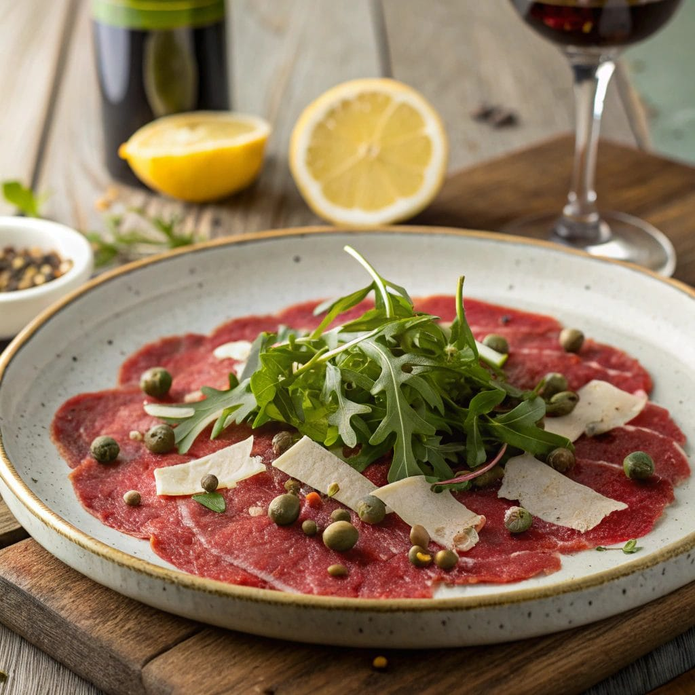
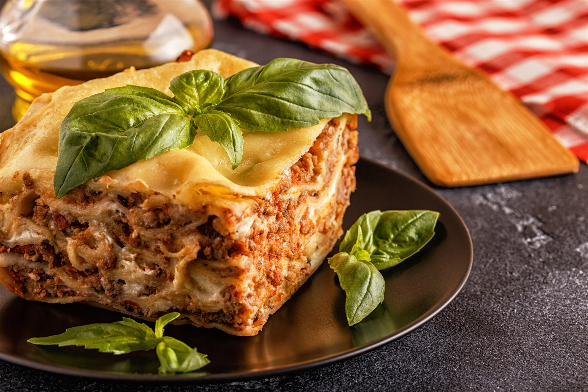

Pratos principais
Carpaccio

Embora a versão original seja de carne bovina, o termo "carpaccio" evoluiu e hoje se refere a qualquer alimento cortado em fatias muito finas e servido cru ou minimamente processado.
Ingredientes
- Peixe e Frutos do Mar: Carpaccio de salmão, atum, polvo ou bacalhau.
- Vegetariano: Carpaccio de abobrinha, beterraba, cogumelos ou tomate.
- Doce: Carpaccio de frutas, como abacaxi ou manga, servido como sobremesa.
Modo de preparo
- Corte: Para facilitar o corte em lâminas quase transparentes, resfrie ou semicongele a carne ou o peixe por 30 minutos a 24 horas antes do preparo. Utilize uma faca bem afiada ou um fatiador de frios.
- Tempero: O tempero clássico inclui azeite extravirgem, suco de limão, sal e pimenta-do-reino. Molhos com mostarda e alcaparras também são comuns.
- Acompanhamentos: Sirva com folhas de rúcula, lascas de queijo parmesão e, se desejar, alcaparras ou pão torrado.
Lasanha

A lasanha é um clássico prato italiano de forno, adorado mundialmente, que consiste em camadas de massa intercaladas com molho (tradicionalmente à bolonhesa e, por vezes, molho branco/bechamel) e queijo. É um prato versátil que pode ser adaptado a diversos gostos.
- 500 g de carne moída (patinho ou acém)
- 1 cebola picada
- Alho picado a gosto
- 2 latas de tomates pelados ou 1 sachê grande de molho de tomate
- Azeite a gosto
- Sal a gosto
- Pimenta do reino a gosto
- Orégano a gosto
- Manjericão a gosto
- Opcional: 1 cenoura ralada ou salsão picado para um sabor mais profundo
- Massa de lasanha (seca ou fresca, conforme instruções da embalagem)
- Presunto fatiado ( 300 g)
- Mussarela fatiada ( 300 g)
- Queijo parmesão ralado para finalizar
Modo de preparo
- Prepare o molho: refogue a cebola e o alho no azeite. Adicione a carne moída e cozinhe até dourar. Acrescente os tomates (ou molho), tempere com sal, pimenta e ervas, e deixe apurar em fogo baixo por pelo menos 30 minutos.
- Prepare a massa: cozinhe a massa de lasanha conforme as instruções da embalagem, se necessário. Escorra e reserve.
- Monte a lasanha: em um refratário, comece com uma fina camada de molho no fundo para não grudar.
- Intercale as camadas na seguinte ordem: massa, molho, presunto, mussarela. Repita até preencher o refratário — idealmente formando 3 a 5 camadas.
- Finalize com uma camada generosa de molho e polvilhe queijo parmesão ralado por cima.
- Asse: cubra o refratário com papel alumínio (passe um pouco de azeite na parte de baixo para evitar que o queijo grude) e leve ao forno preaquecido a 180-200 °C por cerca de 25 minutos. Em seguida, retire o papel alumínio e asse por mais 15-20 minutos, ou até dourar e borbulhar.
- Sirva: deixe a lasanha descansar por 10-15 minutos antes de cortar e servir, para que as camadas se firmem.
↑Topo